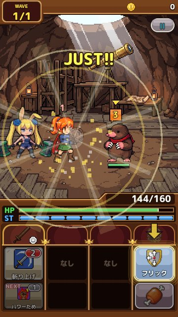
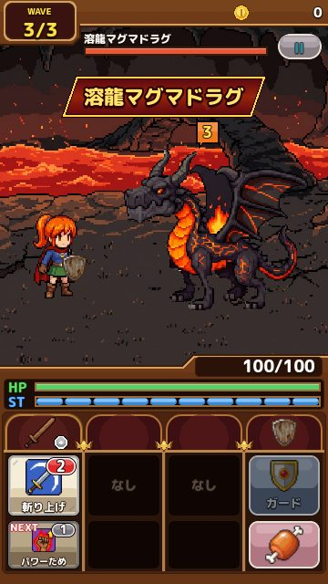
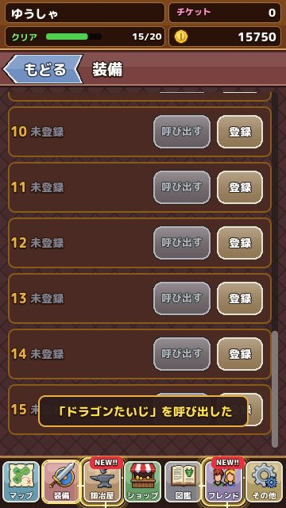

地底編とフリックガード
地底への行き方、向きに合わせて防ぐフリックガードの決まり、地底の特殊攻撃と盾をまとめました。 更新：2026-11-23
地底の世界へ行くには
地底編は、地上の旅を終えたあとの続きです。地上の最後の城をこえてエンディングを見ると、次に地図を開いたとき王さまの話があり、地上の地図に大きな穴が開きます。穴はそれからずっと地図に残り、地上の穴と地底の「光の射す所」を通って、いつでも行き来できます。
地底に降りると、最初の場所は地底観測所です。ここにはショップがあり、チュートリアルとガードの練習もできます。地底のエリアも地上と同じく 1 本道で、各エリアに STAGE が 5 つ、STAGE ごとに 3 つの WAVE、STAGE 4 の最後に中ボス、STAGE 5 の最後にエリアのボスという作りです。
地底の場所は、闇の坑道から始まって、キノコの森・地底湖・モグラの村・水晶の洞窟・化石の谷・溶岩の川・地底都市・根っこの迷宮・宝石鉱山・骨の墓場・水没神殿・奈落の大穴の順に開きます。店があるのは地底観測所・モグラの村・地底都市の 3 か所、たからの STAGE があるのは宝石鉱山と水没神殿です。エリアごとの攻略は地底の攻略 前半と後半のページにまとめています。
地底観測所のチュートリアル
地底観測所を初めて選ぶと、チュートリアルの戦いが始まります。
- 地上の盾のまま、敵の ←← の攻撃を受けます。地上の盾では地底の攻撃は防げません
- 「鍛冶屋」と名乗る小さな女の子がやって来て、地底用の土塗れの盾を投げてくれます。盾はそのまま付けかわります
- 左・上・下の向きの攻撃を、それぞれガード以上で受ける練習をします。うまくいかなくてもやり直せて、7 回までで次へ進みます
- 続けて、↑↑・↓↓・←← の 3 発が続く連続攻撃の練習をします
- 終わると地図にもどり、最初のエリア闇の坑道が開きます
チュートリアルの戦いでは主人公は倒れず、報酬もありません。途中でやめると何も残らず、次に観測所を選ぶとまた最初から始まります。チュートリアルのあとは、観測所の一覧に「チュートリアル」（何度でも）と「チテイカカシ」（倒れないカカシの攻撃をフリックで受けるガードの練習）が並びます。

フリックガードの決まり
地底の敵の攻撃には向きがあります。敵の上に出る印の中に ↑↑・←←・↓↓ のどれかの矢印が出たら、攻撃が当たる瞬間に、ガードボタンをその向きへはじきます（フリック）。向きは上・左・下の 3 つだけで、右はありません。
- はじく瞬間の決まりは地上と同じです。当たる瞬間ぴったりならミラクルガード、少し前ならジャストガード、それより前でも構えが残っていればガードになります
- 向きをまちがえるとガードになりません（盾によっては、まちがえても半分だけ防げるものがあります）
- はじいた構えには長さがあり、構えが終わったあと短い間（ボタンが灰色の間）は次のフリックが受けつけられません。早すぎるフリックや、続けてはじきまくるのは逆効果です
- 指は大きく動かさなくてかまいません。ガードボタンの上で、すっと短くはじけば十分です
地底では地底の盾（フリックガードのスキルを持つ盾）が必要です。地上の盾のままでも出発はできますが、ガードができず、盾の HP・防御力・特殊効果も入りません。地上と地底を行き来したとき、付けている盾がその世界に合わなければ、その世界で持っているいちばん強い盾に自動で付けかわります。それでも、装備セットを地上用と地底用に分けておくと切りかえが楽です（装備セットのページ）。

連続攻撃の受け方
地底のエリアのボス、たからの STAGE の番人などは、向きのちがう攻撃を続けて出す連続攻撃を使います。雑魚と中ボスは連続攻撃をしません。何発来るかは印の下の点の数でわかり、1 発ずつ、その発の矢印の向きにはじいて受けます。連続攻撃の 1 発の強さは、ふつうの攻撃なら 1 発分の 70%、必殺技なら 45% で、全部を受けきれば大きな被害にはなりません。
ボスの必殺技の向きは、ボスごとに決まった並びです。たとえば晶龍プリズマスの必殺技は ↑←↓、溶龍マグマドラグは ↑↑↑ です。何度か戦うと並びを覚えられるので、2 回目からはぐっと受けやすくなります。
盾に「予知」の効果があると、矢印がその分早く見え、攻撃の 1 ターン前から次の向きがうっすら見えるようになります。連続攻撃の向きがはじめから全部見える盾もあります。
地底の 4 つの特殊攻撃
地底のエリアのボスは、必殺技のあとに特殊攻撃を重ねてきます。どのボスがどれを使うかは決まっています。
| 特殊攻撃 | 起きること | 受け方のコツ |
|---|---|---|
| 闇の帳 | このあとの 3 回の攻撃は、矢印が「？？」で隠れる。本当の向きは当たる 0.5 秒前に出る | 早めにはじかず、向きが出てから落ち着いてはじく。予知の盾なら、その分早く見える |
| 地震 | 次の 1 回のガードは構えが半分の長さになり、ジャストの受付もせまくなる。ミラクルにはならずジャスト止まり | ミラクルはねらわず、確実にガード以上で受ける |
| 潜行 | 必殺技の番にボスが地中へもぐり、次の番に必殺技の向きで飛び出して攻撃する。最初が ↓ なら足もとから来る | 飛び出しの矢印を全部ジャスト以上で防ぐと、ボスが 2 ターンのあいだスタンする |
| 溶岩床 | やけどになり、3 ターンのあいだ毎ターン最大 HP の 4% が減る（HP 1 より下にはならない） | ↓↓ の攻撃をジャスト以上で防ぐと、やけどが消える |
潜行は大きなチャンスにもなります。土竜王モグランデのアースドリルや湖龍ネッシーナの大渦は、飛び出しの攻撃を全部ジャスト以上で受けられれば、そのまま 2 ターン殴り放題です。反対に、溶岩床を使う溶龍マグマドラグと機甲龍ギアドラスは ↓ の攻撃をしてこないので、ボスとの戦いの中ではやけどを消せません。HP に余裕を持って挑みましょう。

地底の盾の選び方
地底の盾には、地上の盾とはちがう地底ならではの効果がついています。主なものは次のとおりです。
| 効果 | 中身 | 例 |
|---|---|---|
| 正面の守り | ← の攻撃で受けるダメージが減る | なべぶたシールド・岩壁の盾 |
| 天井の守り | ↑ の攻撃で受けるダメージが減る | コウモリの翼盾・鍾乳石の盾 |
| 足もとの守り | ↓ の攻撃で受けるダメージが減る | モグラの爪盾・地脈の盾 |
| 全方位の守り | どの向きの攻撃もダメージが減る | クリスタルミラー・星鉄の盾 |
| 予知 | 矢印が早く見え、次の向きが 1 ターン前からうっすら見える | ランプ付きの盾・先読みの鏡盾 |
| 軽いフリック | 短いフリックでもガードになる | 板きれの盾・坑道の板盾 |
| 受け流し | 向きをまちがえても、ふつうのガードの半分だけ防ぐ | ホネの盾・竜骨の盾 |
| 連撃の守り | 連続攻撃の 2 発目からのダメージが減る | ダンゴムシの甲羅 |
| 連続ガードスタミナ | 連続攻撃を全部防ぐと ST が回復する | ミスリルバックラー |
| 必殺の守り | 必殺技で受けるダメージが減る | 黒曜の大盾・アダマンの大盾 |
向きの守りの盾は、相手のボスの攻撃の向きに合わせると効果が大きくなります。たとえば岩蟲ガンクイと機甲龍ギアドラスのふつうの攻撃はいつも ←← の 2 発なので、正面の守りの盾がよく効きます。
地底観測所の店では N の盾（なべぶたシールド・板きれの盾・ランプ付きの盾。3,000 コイン）、モグラの村ではコウモリの翼盾とモグラの爪盾、地底都市では岩壁の盾とダンゴムシの甲羅（R。12,000 コイン）が買えます。地底の盾は盾のページでも紹介しています。
地底の武器と強さの目安
地底の敵は、地上の敵よりずっと HP と攻撃力が高く、スタンに必要な値も地上の 1.5 倍です。地上で鍛えた SR+ の武器のままでは苦しくなるように作られているので、地底で手に入る SSR の武器に乗りかえていきましょう。地底で落ちる武器は SSR の剣・槍・槌で、のこりは地底の盾です。
- 地底の武器には、スケルトンに強い「骨斬り」（剣）、ムシに強い「ムシ払い」（槍）、モグラに強い「モグラ叩き」（槌）のスキルがつくことがあります。その種族には 3 倍の威力です
- 地底の店のガチャは「地底ガチャ」で、地底観測所 20,000 コイン（武器 SSR 20%）、モグラの村 25,000 コイン（25%）、地底都市 30,000 コイン（30%）。のこりは地底の盾です
- 地底の素材は地底石と魔晶石です。地底石は雑魚が 30% で落とし、中ボスとボスは必ず地底石か魔晶石（魔晶石は 40%）のどちらかを落とします。鍛冶屋の「素材」で、地底石 3 個とコイン 1,000 で魔晶石を 1 個作れます
地底の敵はモグラ・ムシ・スケルトンなど地上にいない種族が多く、弱点の武器も種族ごとにはっきり分かれています。モグラの雑魚は槍、ムシは槌、スケルトンは剣が弱点で、ゴーレムは地上と同じく槌です。3 種類の武器をそろえて、エリアの顔ぶれに合わせて入れかえるのが地底の基本になります。
地上と地底の行き来
地底が開いたあとも、地上へはいつでももどれます。地上のボスの素材がほしいとき、地上の宝の STAGE でチケットを使いたいときなどは、気軽に行き来してください。地上と地底では使える盾がちがうので、出発前の画面で盾の欄を確かめるくせをつけておくと安心です。

地底のあとにも、冒険はまだ続きます（海底編）。